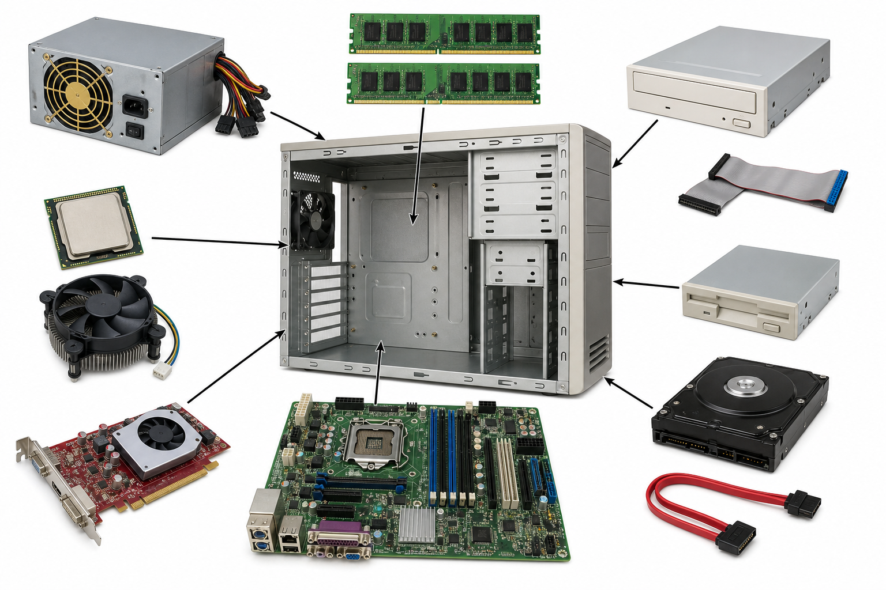
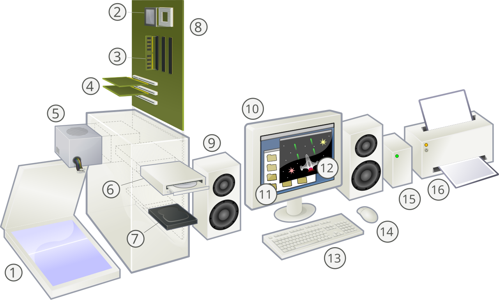

第 1 章
台式机电箱里都有什么？
拖动旋转 3D 机箱，点击零件看讲解；也可以先看下面的「零件总览图」，搞清楚每个零件装在哪里。
按住拖动可旋转 · 点击零件查看说明
零件总览图：它们装在机箱的哪里？
中间是打开侧板的机箱；四周是要装进去的零件，箭头指出安装位置。点图下的标签，可同步打开上方「零件档案」。

说明：图中还有旧式软驱、IDE 排线等「历史零件」——现在新电脑多用 SSD + SATA/NVMe 线，但装机思路一样：对上位置、插稳接口。
整机爆炸图（含显示器与键鼠）
下面这张是经典的「整机拆解」示意图，把主机外面的显示器、键盘、鼠标也画进来了，方便建立整机印象。

- 显示器
- 主板
- CPU
- 内存 RAM
- 扩展卡（如显卡）
- 电源
- 光驱
- 硬盘
- 键盘
- 鼠标
图片来源：Wikimedia Commons（Personal computer, exploded），CC 许可，便于教学使用。
主板平面图（像城市地图）
把主板平铺开来看：每个区域住着不同的「邻居」。点击色块也会更新上方零件档案。
快速理解
把电脑想成一座城市
这是帮助记忆的比喻——不是严格定义，但很适合第一次建立直觉。
第 2 章
笔记本电脑和台式机差在哪？
一个像折叠书包，一个像可改装的乐高城堡。下面用 3D 并排对比。
台式机 Desktop
- 主机、显示器、键盘鼠标分开
- 零件大，散热好，性能上限高
- 方便升级：换显卡、加内存、加硬盘
- 要有固定桌面空间，不便随身带
笔记本 Laptop
- 屏幕、键盘、电池全装在一起
- 轻便便携，有电池，可离插座使用
- 内部空间紧，升级能力弱（很多焊死）
- 同价位通常性能略低于台式
| 维度 | 台式机 | 笔记本 |
|---|---|---|
| 便携性 | 差 | 强 |
| 性能 / 散热 | 通常更强 | 受体积限制 |
| 升级改装 | 很容易 | 很难或不能 |
| 屏幕 / 外设 | 可自由搭配 | 一体，可外接 |
| 适合场景 | 家里游戏、创作、学习主机 | 上课、外出、旅行 |
给好奇少年的建议：家里有空间又想玩 3D 游戏或学编程搭模型，台式更爽；经常要带着走，选笔记本。很多人两台都有——笔记本出门，台式在家。
第 3 章
什么是操作系统？
操作系统（Operating System，简称 OS）是电脑的「大管家」。没有它，软件不知道怎么用硬件。
它每天在忙什么？
- 开机自检，把系统从硬盘装进内存
- 管理窗口、鼠标、键盘输入
- 决定哪个程序先用 CPU（调度）
- 管文件：存哪、叫什么、谁能看
- 管安全：账号、权限、防火墙
- 提供统一接口，让 App 不用直接操作硬件
常见操作系统家庭
Windows微软，个人电脑最常见
macOS苹果电脑专用
Linux开源，服务器和极客最爱；安卓也基于 Linux 内核
ChromeOS谷歌，偏网页与云端
iOS / iPadOS / Android手机和平板的操作系统
按下电源键之后发生了什么？
- 1电源供电，主板自检（POST）
- 2固件（BIOS/UEFI）找到启动盘
- 3引导程序把操作系统内核加载进内存
- 4驱动加载，桌面出现，你可以登录
第 4 章
什么是软件？
硬件是你摸得着的零件；软件是告诉硬件「做什么」的一串指令。没有软件，电脑只是一堆会发热的金属和硅。
系统软件
让电脑能「活起来」的基础设施。
- 操作系统（Windows、macOS）
- 驱动程序
- 工具：压缩、杀毒、备份
应用软件
为具体任务而生，你天天用到的那些。
- 浏览器、Office、微信
- 游戏、剪辑、画图、编程 IDE
- 网站其实也是一种远程软件
程序长什么样？
程序员写「源代码」，再编译/解释成机器能懂的指令。
// 伪代码：让电脑打招呼
如果 用户点击按钮:
屏幕显示 "你好！"
播放提示音补充：电脑其实只懂 0 和 1
更完整的故事在下一节。你可以先输入一个字母，看它变成一串 0 和 1。
字母 A 在电脑里常常是 01000001
延伸 · 二进制
为什么电脑只存 0 和 1？
不是电脑「笨」，而是物理世界里，最稳妥的信号往往只有两种状态。奇妙的是：就靠这两种状态，能拼出整个数字宇宙——很像中国古人说的「二生三，三生万物」。
道生一，一生二，二生三，三生万物。
——《道德经》第四十二章
「二」可以想成阴阳两仪：有/无、开/关、高/低。电脑里的 0 与 1，正是一对最简单的「两仪」。
电路最喜欢「说清楚」
芯片里是海量微型开关（晶体管）。电压高一点或低一点，用两种状态表示最不容易搞混：
- 1 ≈ 有电 / 开 / 高电平
- 0 ≈ 没电 / 关 / 低电平
如果硬要存 0、1、2、3……很多档电压，噪声稍一大就会认错。两种状态最稳、最省事、也最好大规模制造。
不是只能数到 1
单个开关只能是 0 或 1；但很多个开关排在一起，就能表示很大的数、很复杂的信息。
- 1 位（bit）：2 种可能 —— 像一枚硬币正反面
- 2 位：00 01 10 11 —— 4 种
- 8 位（1 字节）：256 种 —— 够编码很多字母与符号
- 再多位：图片、音乐、游戏世界……
组合
10010001 → 十进制 145
点上面的小开关，翻转 0 / 1，看数值怎么变
万物
文字
图片
音乐
游戏
视频
AI
先有「能表示信息」这件事——电流、开关、存储介质。
分出两种稳定状态：阴 / 阳，也就是 0 / 1。
规则出现了：怎么排列、怎么运算、怎么约定「01000001 = A」。
约定 + 海量比特，生长出软件、网络、游戏和人工智能。
| 中国传统意象 | 计算机里的对应 |
|---|---|
| 阴阳两仪 | 0 与 1 两种状态 |
| 爻的组合（如八卦） | 多位比特的排列组合 |
| 三生万物 | 编码规则 + 海量比特 → 无穷信息 |
| 易有太极 | 再复杂的程序，底层仍是开关在翻转 |
跟孩子讲时可说：电脑并不是「只会数到 1」，而是「最擅长用最简单的两种积木」。积木只有两种，但搭法无穷——这就是二进制的力量，也是「三生万物」在硅片上的回响。
第 5 章
GPU 和显卡是什么？
GPU = Graphics Processing Unit（图形处理器）。显卡通常指「装了 GPU + 显存 + 散热的一整块板卡」。
CPU vs GPU：两种「思考」方式
CPU
少量超强核心，擅长复杂逻辑、做决定、跑操作系统。
像几个特别聪明的同学，一道难题一道难题解。
GPU
成千上万个小核心，擅长同时做大量相似计算。
像整座礼堂的同学一起算「每个像素该是什么颜色」。
- 游戏画面、3D 建模、视频剪辑都依赖 GPU
- 现在 AI 训练/推理也大量用 GPU（矩阵运算很适合并行）
- 核显：GPU 做在 CPU 里，够上网办公；独显：独立显卡，玩游戏/创作更强
- 显存（VRAM）：显卡自己的「超快跑腿内存」，专门给画面和模型数据用
第 6 章
Windows vs 苹果：深度对比
「苹果」通常指 Mac 电脑 + macOS。「Windows」是微软的操作系统，可装在很多品牌电脑上。没有绝对谁更好，只有更适合谁。
Windows 世界
开放生态：联想、戴尔、华硕、自组机……硬件选择极多。
苹果 Mac 世界
软硬一体：电脑和系统都由苹果设计，体验统一、可控。
谁在造电脑？Windows 有很多家，苹果只有一家
这是最容易被忽略、却特别重要的差别：买 Windows 电脑时，你是在选「哪家工厂」；买 Mac 时，牌子只有 Apple。
联想 Lenovo
ThinkPad 商务本很有名；拯救者偏游戏。国内保修与门店相对好找。
戴尔 Dell
XPS 轻薄本、Alienware 游戏本、OptiPlex 办公台式常见于公司与学校。
惠普 HP
家用本、暗影精灵游戏本，打印机生态也大。型号很多，买时要看准配置。
华硕 ASUS
ROG 玩家国度做游戏硬件；灵耀等系列偏轻薄与创作。
宏碁 Acer / 微星 MSI
宏碁性价比机型多；微星强项是游戏本与创作者笔记本。
华为 / 荣耀 / 小米等
国内消费品牌笔记本也常见。注意：系统仍是 Windows（或厂商定制界面），不是另一套「中国操作系统」。
微软 Surface
微软自己也造电脑！但只是 Windows 世界里的「一家」，不是唯一。
自己组装 DIY
主板、CPU、显卡分开买，像拼乐高。只有 Windows（或 Linux）台式常见；苹果一般不能这样玩。
苹果 Apple：只有一家
想用正版 macOS，通常只能买苹果电脑：MacBook Air / Pro、iMac、Mac mini、Mac Studio 等。机型由苹果定，颜色与接口选择也少得多，但软硬件磨合更统一。
- 没有「华硕版 Mac」或「联想版 macOS」
- 芯片、外壳、系统多半一起设计
- 售后主要走苹果官方或授权点
| 问题 | Windows 阵营 | 苹果阵营 |
|---|---|---|
| 系统谁做的？ | 微软 | 苹果 |
| 电脑谁造的？ | 很多家（联想、戴尔、华硕……）或自己装 | 基本上只有苹果 |
| 同价位选择 | 极多，要对比配置与做工 | 机型少，主要看屏幕尺寸与芯片档位 |
| 坏了怎么办？ | 品牌售后 / 本地维修店 / 换零件 | 多为官方体系，第三方更受限 |
口诀：Windows 是「一家做系统，千家造电脑」；苹果是「系统与电脑都只此一家」。所以逛电脑城时，Windows 要问品牌和配置；苹果则主要在苹果店或授权渠道选机型。
| 主题 | Windows | 苹果 macOS |
|---|---|---|
| 买什么 | 只买系统授权 + 任意兼容电脑；价位从千元到顶配都有 | 买苹果电脑就自带 macOS；机型选择少，起售价通常更高 |
| 界面感觉 | 开始菜单、多桌面、高度可定制；游戏与生产力并重 | 程序坞、菜单栏在顶部；动画细腻，默认简洁 |
| 软件与游戏 | 游戏王国；工程、建筑设计等专业软件覆盖广 | 影像、音乐、设计、开发体验优秀；大型 3A 游戏相对少（近年在改善） |
| 硬件自由 | 可换显卡、内存、硬盘（视机型）；自组机玩家天堂 | 多为一体化；Apple Silicon 后很多部件不可升级 |
| 芯片路线 | 主要是 Intel / AMD x86；也有 ARM 新品 | 近年用自研 Apple Silicon（M 系列），能效与续航突出 |
| 生态联动 | 与 Xbox、微软 365、安卓手机有联动，但品牌分散 | 与 iPhone、iPad、AirPods、Apple Watch 联动极强（隔空投送、连续互通） |
| 病毒与安全 | 用户量大，恶意软件更多；需养成更新与谨慎下载习惯 | 目标相对少 + 权限模型严格，但仍需警惕钓鱼与恶意软件 |
| 学习与编程 | 学校机房常见；兼容绝大多数教学软件 | Unix 底子，对学编程、做网页、iOS 开发很友好 |
| 维修与寿命 | 零件好找，维修选择多 | 官方维修体系完善，第三方维修受限更多 |
| 适合谁 | 想打游戏、预算灵活、喜欢自己折腾硬件的人 | 已有 iPhone、重视续航与做视频/设计、不爱折腾驱动的人 |
常见误解
- 「Mac 不能中毒」——不绝对，只是相对少
- 「Windows 一定卡」——很多是配置或软件过多导致
- 「苹果不能打游戏」——能玩，但 steams 大作与外设生态仍是 Windows 更强
怎么选？（给 12 岁场景）
- 主力玩 3A 大作 / 学装机 → 优先 Windows 台式或游戏本
- 家里全是 iPhone / 想剪视频做音乐 → Mac 很香
- 预算有限又要做作业上网课 → Windows 笔记本性价比通常更高
- 也可以先学通用概念，系统以后都能迁移
第 7 章
Windows 使用入门
认识桌面、开始菜单、文件和快捷键。下面有一台「迷你 Windows」可以点着玩——点哪里，右边就会出现讲解。
已固定
每天都会用到
- 开始菜单：左下角 Windows 图标，找程序、关机
- 任务栏：正在运行的程序排在这里，点一下可切换
- 文件资源管理器：管文件夹与文件（作业、下载、图片）
- 设置：Wi‑Fi、蓝牙、显示、更新、账号
- 通知中心 / 快捷设置：右下角，可开关 Wi‑Fi、夜间模式等
文件怎么放才不乱
- 作业放「文档」或自己建的「我的作业」文件夹
- 网上下的东西先进「下载」，整理后再搬走
- 重要文件不要只放桌面——桌面乱了也难找
- 删除的文件先进「回收站」，清空才真正消失
- 学会看后缀：
.docx文档、.png图片、.exe安装程序（要小心）
超级好用的快捷键
Ctrl+C复制
Ctrl+V粘贴
Ctrl+Z撤销
Ctrl+S保存
Alt+Tab切换窗口
Win+D显示桌面
Win+E打开资源管理器
Win+I打开设置
Win+L锁定电脑
Win+Tab多桌面 / 任务视图
Ctrl+Shift+Esc任务管理器
Win+PrtSc截图保存
安装软件（正规路径）
- 打开 Microsoft Store（应用商店），或去官网下载
- 只运行你信任的
.exe/.msi安装包 - 按提示「下一步」，注意有没有捆绑其它软件
- 装好后可在开始菜单找到它，也可固定到任务栏
卸载软件
- 打开「设置」→「应用」→「已安装的应用」
- 找到程序 → 卸载
- 不要随手删安装文件夹当卸载——容易留垃圾或弄坏系统
更新与安全
- 「设置」→「Windows 更新」：保持更新
- Windows 安全中心：防火墙与病毒防护默认打开
- 每个账号自己的密码；公用电脑用完锁定（Win+L）
- 陌生邮件附件、破解版游戏：高风险，别点
| 现象 | 可以试什么 |
|---|---|
| 某个窗口没响应 | Ctrl+Shift+Esc 打开任务管理器 → 结束该任务 |
| 整台电脑很卡 | 看任务管理器谁占 CPU/内存；关掉不用的网页和程序 |
| 上不了网 | 检查右下角 Wi‑Fi；重启路由器；飞行模式是否打开 |
| 找不到文件 | 任务栏搜索框输入文件名；或看「下载」「文档」 |
| 还是不行 | 保存作业后重启；仍不行再找家长协助 |
练习任务：新建文件夹「我的作业」→ 把桌面上的练习文件拖进去 → 用 Win+E 再找一遍。熟练之后，Windows 就像自己的书桌一样好用。
第 8 章
网络通信：电脑怎么和远方说话？
上网、看视频、打联机游戏，本质都是：把数据拆成小包裹（数据包），沿着线路送到正确的地址，再拼回来。
三个必须记住的词
- IP 地址：电脑在网上的门牌号，例如
203.0.113.10 - 端口：同一台电脑上不同「窗口」——网页常走 443，游戏另有自己的端口
- 延迟 / Ping：一来一回要多久；越低越跟手，打竞技很敏感
打开网页时发生了什么？
- 1DNS：把「baidu.com」翻译成 IP
- 2连上服务器，建立加密通道（HTTPS）
- 3请求网页文件，拆成很多数据包运回
- 4浏览器拼起来，显示给你看
联机游戏是怎么通信的？
大多数网络游戏用「客户端 + 服务器」模式：你的电脑负责画面，服务器负责「谁说了算」——避免有人偷偷改血量作弊。
你
客户端 A
正在开枪
游戏服务器
裁判 & 世界状态
友
客户端 B
等待中…
点按钮，看「消息包裹」飞向服务器，再广播给队友。
按下射击，你的画面可能立刻播动画（预测），手感才跟手。
真正权威的结果由服务器判定：打没打中、扣多少血。
把「世界更新」发给所有玩家：队友看到你开枪，对手看到自己掉血。
Ping 高时，消息到得慢，就会「瞬移、打不中、橡皮筋」。拖动上面的延迟滑条试试。
客户端–服务器
像老师当裁判：大家把动作交给服务器，服务器说了算。王者、原神、大多数网游都这样。
- 优点：更公平、难作弊、可存档进度
- 缺点：要租服务器，人多时要花钱扩容
点对点 P2P
像小朋友自己组局：有时由其中一台电脑当「房主」。部分联机小游戏、旧作会用。
- 优点：省服务器成本
- 缺点：房主断网全员受影响，更易被作弊
TCP vs UDP（游戏常用）
TCP：保证送到、按序——适合登录、商城、聊天。
UDP：更快但不保证——适合不断刷新的位置、射击；丢一两个包就用下一帧顶上。
| 场景 | 主要传什么 | 最在意什么 |
|---|---|---|
| 刷网页 / 看文档 | 完整文件，丢了要重传 | 正确、完整 |
| 看视频 | 连续影像块，可缓冲 | 带宽（够不够快） |
| 语音 / 视频通话 | 实时声音画面 | 延迟 + 稳定 |
| 竞技联机游戏 | 操作、坐标、伤害结果 | 低延迟、公平判定 |
动手观察：打开游戏设置里的「显示网络信息 / Ping」。Wi‑Fi 远、墙多、家里有人下大片时，Ping 往往会升高——有线网线通常更稳。
加餐章节
还值得知道的事
你没点名的部分，这里补上——它们会让「懂电脑」这件事连成一张网。
CPU 如何「思考」
CPU 不断循环：取指令 → 译码 → 执行 → 写回结果。频率（GHz）像节奏快慢；核心数像能同时雇几个工人。缓存是 CPU 旁边的小抽屉，放最常用的数据。
内存 vs 存储
RAM：工作台，快，关机清空。SSD/硬盘：书架，慢一点，但关机还在。电脑变慢，有时是内存不够，系统只好把工作台「挤」到硬盘上（虚拟内存），就会顿。
文件、文件夹、路径
文件是数据的包裹；文件夹是分类抽屉。路径像地址：C:\Users\Kid\作业\作文.docx 或 Mac 上的 /Users/kid/作业/作文.docx。
想了解上网细节？
数据包、Ping、联机游戏通信，已经写进 第 8 章 · 网络通信。可以和打游戏时的延迟一起对照着看。
输入设备与输出设备
输入：键盘、鼠标、麦克风、摄像头、手柄。输出：显示器、音箱、耳机、打印机。触摸屏则两边都沾边。
安全小卫士（必读）
- 不点来路不明的链接，不装「破解版」
- 账号开双重验证，密码每个网站不一样
- 系统与浏览器保持更新
- 重要作业用云盘或移动硬盘备份
编程：从使用者到创造者
会用软件很棒；会写软件更能创造。可以从 Scratch 图形化、Python、网页 HTML/CSS/JS 开始——你现在打开的这份指南，就是 HTML 做的。
AI 和电脑的关系
AI 程序也是软件，但特别吃算力（常要 GPU）。它靠大量数据「学规律」，不是真的像人一样理解世界。你们项目里的手写数字识别，就是很好的入门实验。
检验一下
小测验：你记住了吗？
和爸爸一起答。点选项后会立刻告诉你对不对。
给家长
怎么讲给他听
- 先玩第 1 章 3D 拆机，建立「零件地图」，不要一上来背名词。
- 用「城市比喻」串起来，再回到真实名字。
- 打开家里的任务管理器 / 活动监视器，看 CPU、内存占用——把抽象变成屏幕上的数字。
- 讲二进制时，可先念「道生一，一生二，二生三，三生万物」，再点开关看 0/1 组合。
- 打开第 7 章迷你 Windows，一起练：建文件夹、用搜索、认快捷键。
- 打一局联机游戏时打开 Ping 显示，对照第 8 章讲「消息怎么飞」。
- 对比家里的手机、平板、电脑：都是计算机，只是形态不同。
- 若他想继续：装一个 Ubuntu 虚拟机，或一起看机箱（断电！），或回到本仓库的 AI 数字识别项目。